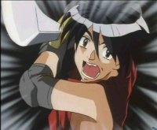
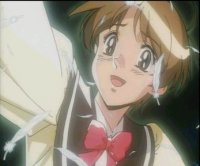
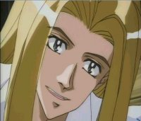
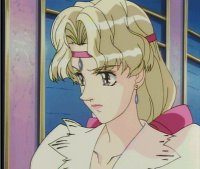
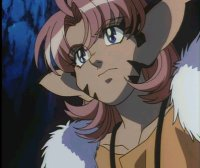
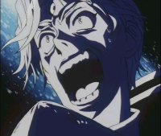
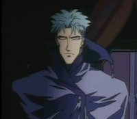
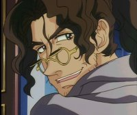
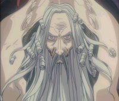

|  | Van, the protagonist is the King of Fanelia. He is also a direct descendant of the people of Atlantis (Draconian) and as such, has wings. Wings that he never shows unless when in time of crisis, for people do not understand. Van is the only person capable of piloting Escaflowne. Van after killing the dragon and taking the energist from it becomes the king in the second episode. His kingdom is then destroyed and this sword master killed. Van spends the rest of the series trying to avenge his kingdom and will often lose sight of what's important. Van is short tempered, aggressive, and reckless, and a master Guymelef pilot. Over the course of the series his once gentle should change to bare the weight of war. He is deeply in love with Hitomi but, isn't able to express him emotions causing her to run into Allen's arms. |
|  | Hitomi Kanzaki, the other protagonist, seemed just like an ordinary fifteen year-old high school student at first but in fact Hitomi is very special. She is versed in Tarot and fortune telling and she is also one of the best runners of her school. On Gaea, she starts learns to use the precognitive powers that have been in her family for generations. She tries hard to help Van and Allen to fight the Zaibach Empire but often things turn upside down when willing things with her power. Charming and winsome, but unsure of herself as a woman, Hitomi soon falls in love with Allen yet with unsure about her feelings toward Van. Although she is optimistic and cheerful she is often confused about her emotions towards the Allen and Van. At the end of the series she finds out that her true love all alone is really Van. |
|  | Allen is an knight of the Royal Asturian Guard. Allen Shezar is know to be one of the best swordsmen of all Gaea. A man possessed by a strong sense of justice, he seeks to repair the wrongs done by the Zaibach. Allen main mission for the most of his life has been to look for his little sister, Serena, who mysteriously disappeared for years. He stops at nothing to find her. His reputant makes him seem like a playboy but he just seems to love many women. He has strong feels for Millerna, who looks a lot like his old love and Hitomi. Allen pilots a Guymelef named Scherazade and is the captain of the Crusade ship. At the end he devotes his life to his family and he figured out that the reason why he wanted to spend the rest of his life with Hitomi was because she reminded him so much of his little sister. |
|  | Millerna Aston is the youngest of the three princesses of Asturia. She is often considered a tom boy unlike her sisters. Millerna is well educated in medicine but was forced to give it up. Her main goal is to help people. Millerna is terribly in love with Allen and gives up everything to be with him. Millerna bares a remarkable resemblence to her older sister, whom passed away three years ago, Marlene. Her true love is Allen but she is s engaged to Dryden Fassa, a wealthy merchant. |
|  | Merle is a cat girl that has pink hair ears and a tail. She was orphaned from a Cat tribe while very young. She was found and brought back to Fanelia. Over the years she became Van's faithful friend, the only person that Van can consider really part of his family. She like Hitomi is in love with Van. Of course this is obvious to Van but he only treats her like a little sister or something along those lines. She isvery playful yet can get annoying some of the times for she likes to tease Hitomi. |
|  | Dilandau is probably considered the bad guy of the show. He is the leader of the Zaibach army. He is crazy most of the time and is down right ruthless. With little to provoke him he takes Van, Hitomi, and Allen as his mortal enemy. Believe it or not Dilandau Albatou is also Serena Shezar, Allen's younger sister. This is because she was taken when she was only five by Zaibach's army. After taken they performed experiments on her turning her into Dilandau. She had no memory about her past until the the death of the only that cared for him, Jajuka, erasing his memory transforming him back to his former self. |
|  | Folken Fanel is an officer that works for the Zaibach Empire. Folken is actual Van's older brother as you can guess by his last name. Ten years ago he was suppose to become king by slaying a dragon to gain the title. He did not want to do this but did so any ways but he was not able to slay the dragon. He fought the dragon but lost his arm in the battle. He fleed his country in shame and became a servent of the Empire. He believed that Dornkirk's ways would bring peace to the world only to find out that what he was doing is wrong. In the end he tried to right the wrongs that he done but by then his wings had turned all black, from the science experiments he had done to increase his luck, limiting his life. |
|  | Dryden is considered one of the planets best educated scholars. He's the one who is engaged to Millerna's fiancee. He is very handsome, charming, rich, and very much in love with the princess. At the end of the show he lets her go because he knows that she only loves Allen. |
|  | Dornkirk is the emperor of the Zaibach Empire. He use to live on Earth as a scientist and later on existed on Gaea trying to teach his way to others. He built an absolute fortune machine to try to control the world, to bring peace to all that live there but his methods were wrong and in the end he lost for he couldn't control the faith of the entire planet. |